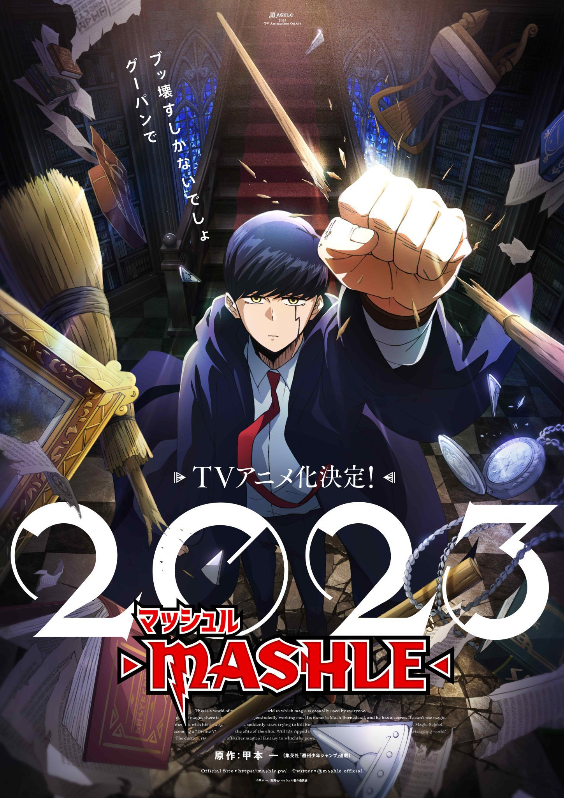

Mashle:Magic and Muscles
Mashle is a action anime based on magic powers, where the main character Mash Burndead is born without any magic. He is the only one in the world who has no magic powers. He is a student of Easton Magic Academy, where he is bullied by his fellow students. He is the strongest student in the academy, but he is not allowed to use his strength. The story progresses with him trying to hide his strength and trying to survive in the academy.
Naruto